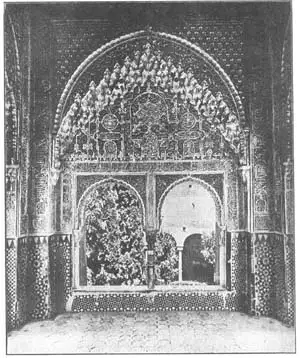
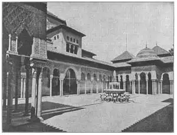
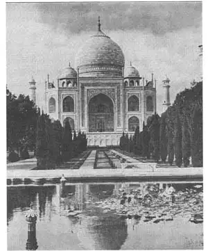

77
OPEN SESAME
芝麻开门

ALI BABA came to the cave of the forty thieves. The door in the rock was shut. “Open sesame,” said Ali Baba, and the door swung open.
Ali Baba was a Mohammedan. So was Sinbad the Sailor, so were Prince Agib and all the rest of those fascinating people in the “Arabian Nights.”
“Open sesame.” Let’s see if the magic words will open the door of this chapter to show the treasures of Mohammedan architecture.
The Mohammedans believe in a book called the Koran which is for them what the Bible is for Christians. Now, the Koran forbade any Mohammedan to make a picture or a likeness of any living thing. So you can easily guess that a Mohammedan temple, or mosque as it is called, must be very different from a Gothic cathedral which is covered with hundreds of statues of men and animals and plants.
Another difference you would probably notice at once if you were in Istanbul or any other Mohammedan city would be the number of domes. These domes are generally not round but oblong like half an egg or an onion and they often have points on the tops like the end of a fat turnip or beet. But all the mosques do not have domes, for a Mohammedan dome used to be the sign of a tomb and only where the building served as a tomb for some one, a dome was built.
When you get close to a Mohammedan building you notice that the builders must have been good carvers of stone and marble, even if their religion didn’t allow them to carve statues of living things. Their carving is a pattern of straight lines and curves, squares and circles, diamond shapes and star shapes, zigzags, and crisscrosses. Some of the carving is so fine it forms a network that looks like stone lace.
Inside the buildings the carving and decorations become even richer than outside. The designs are called arabesques because the first Mohammedans were Arabs and the Arabs built many mosques decorated in this way. Sometimes the arabesques are writings from the Koran The Arabian letters are graceful and make beautiful decorations.
And inside these Mohammedan buildings we are apt to find still another form of decoration that other buildings do not have. The vaults under the domes (the ceilings of the rooms) often have a curious carved work that looks like hundreds of little stone icicles hanging down from the roof.
In every Mohammedan village is at least one minaret or tower for the muezzin, a man who climbs up five times a day to call the people to prayer. Some of the mosques have a minaret at each corner.
“Come to prayer, come to prayer. There is no god but Allah and Mohammed is his prophet,” sings the muezzin, and then all good Mohammedans face toward the sacred city of Mecca and kneel in prayer. Mecca is the sacred city because Mohammed himself was born and lived there. Each Mohammedan mosque has a niche or hollow in the wall nearest Mecca. This niche takes the place of the altar in a church or temple.
The early Mohammedans did not believe in simply asking other people to become Mohammedans. They brought people into their religion by saying to them, “Be a Mohammedan or we’ll kill you.” So the Mohammedan religion spread quickly from Arabia where it started, for the Arabs were great conquerors. Eastward it spread, farther and farther, through Persia and across India. Bagdad became the capital city of these eastern Mohammedans. Westward the Arabs pushed across Egypt, across northern Africa till they came to the Strait of Gibraltar. This did not stop them. They built boats and sailed across to Spain. Through Spain they spread until they got as far as France. All Europe would probably have become Mohammedan if the French had not stopped the Arabs in a battle fought at the town of Tours, in France.

No.77-1 ARABESQUFS IN THE ALHAMBRA, GRANADA
（格林纳达阿尔汉布拉宫的阿拉伯图案）
But much of Spain did become Mohammedan. The Arabs in Spain were called Moors. The Moors set up a capital at Cordova for all the Western Mohammedans, just as Bagdad was the Eastern capital just as the Roman Empire had once had an Eastern and Western capital—Rome and Constantinople. For over seven hundred years the Moors ruled in Spain until they were finally driven out about the time of Columbus.
In Cordova the Moors built a huge mosque which is still standing there. You remember how the Mohammedans turned the Christian church of St. Sophia in Constantinople into a mosque. Well, in Cordova just the opposite happened. For when the Moors were finally driven out of Spain the Christians turned the Mohammedan mosque into a church. And a church it still is.
But by far the most famous Mohammedan building in Spain is the Alhambra. The Alhambra was built by the Moorish kings of Granada in Spain as a kind of fortress palace. The Alhambra is on a tall hill of rock with steep cliffs that helped keep back enemies. Inside the different buildings were guard rooms and halls, gardens and courts, all decorated with thousands of arabesques. The Court of Lions is one part of the Alhambra that you may have heard of. It looks something like a cloister, for round its four sides are arcades. In the middle is a big marble basin, held on the backs of twelve lions, which is used as a fountain.
And now I’m sure you are going to ask an embarrassing question. It’s embarrassing because I can’t answer it.
“How could the Moors have marble lions if they were not supposed to carve statues of living things?”

No.77-2 THE COURT OF LIONS IN THE ALHAMBRA（阿尔汉布拉宫的狮子庭院）
I don’t know. Maybe the lions were an exception that proved the rule. Maybe the lions were carved by Christians and captured and brought to the Alhambra by the Moors. Maybe … But who knows? On page 367 is a picture of them. Do you see any arabesques?
Another noted building in Spain left by the Moors is called the Giralda Tower. Giralda meant weather-vane. The weather-vane is naturally on the very top of the tower. It is a figure of Faith that swings with the wind. The top three stories of the tower are Christian Renaissance architecture, because when the Christians finally drove the Moors out of Spain they used the Mohammedan buildings for their own needs and often added to them.
Now I’m going to take you from Spain in the West to India in the East. In Agra, India, lived a Mohammedan ruler who erected a building in honor of his wife. You will be surprised to hear what kind of building it was. It was a tomb! And yet his wife was still alive when he built her tomb.

No.77-3 THE GAJ MAHAL（泰姬陵）
That seems strange to us, but it was the custom there. It was a sensible custom, at that, for the ruler and his wife used the tomb as a kind of pleasure house where visitors were received and parties were held. Then when the rulers died they were buried there.
This tomb is called the Taj Mahal. As it was a tomb, it was crowned with a dome. Many travelers who have seen it have called it the most beautiful building in the world. They have even placed it ahead of the Parthenon. The Taj Mahal is built all of marble and shines in the sun like a beautiful white jewel. Around the building are gardens, trees, lawns, and fountains and right in front of it is a long rectangular pool of water that reflects the trees and the Taj Mahal too.
And with the Taj Mahal we will end our story of Mohammedan buildings, saying as Ali Baba might say to close the chapter, “Shut sesame.”
【中文阅读】
阿里巴巴来到四十大盗的洞口，发现洞门紧闭。“芝麻开门。”阿里巴巴一喊，门就开了。
阿里巴巴和《一千零一夜》故事里所有搞笑的人物，如水手辛巴达、王子阿吉卜一样，都是伊斯兰教徒。
“芝麻开门。”我们来看看这个魔语能否打开这一有关伊斯兰建筑瑰宝大门的篇章。
伊斯兰教徒信奉《古兰经》，就像基督徒信奉《圣经》。《古兰经》禁止任何伊斯兰教徒创作任何有关动物的肖像或图画。所以，你也许会自然而然地联想到伊斯兰教的寺院或清真寺，肯定与哥特式大教堂极为不同，因为哥特式教堂上刻有成百上千人像和动植物雕像。
如果你在伊斯坦布尔或其他穆斯林城市，可能还会立刻注意到另外一个不同点，那就是这些城市有数不清的圆顶。这些圆顶通常不是圆形，而是椭圆形，就像半个鸡蛋或半个洋葱那样，而顶部还常呈尖形，就像一颗粗大的芜菁根或甜菜根。但并不是所有的清真寺都有圆顶，因为清真寺的圆顶是坟墓的象征，只有当某座清真寺用作某人的坟墓时，才会建一个圆顶。
当你走近一座伊斯兰教建筑物时，你会注意到，即便他们的宗教不允许雕刻活物的像，但建筑师们必须同时也是出色的石匠或大理石雕工。他们雕刻的图案，有直线和曲线的，有方形和圆形的，有星星状和菱状的，还有Z字形和十字形的。有些雕刻非常精美，形成网状，看起来就像石刻花边。
建筑内部的雕刻和装饰要比外部丰富得多。这些装饰叫做阿拉伯式图案，因为最初的伊斯兰教徒是阿拉伯人，而且阿拉伯人用这种图案装饰了许多清真寺。有时阿拉 伯图案还会采用《古兰经》的文字。阿拉伯字母优雅，可以做成许多好看的装饰。
我们在伊斯兰教建筑的内部还会看到另外一种在其他建筑里看不到的装饰类型。在圆顶下方的穹顶（就是各个房间的天花板）上你常会看到一种奇怪的雕刻作品，看上去就像悬挂在屋顶上数不清的小小的冰石柱。
在伊斯兰教信徒的村庄里都至少建一座光塔或宣礼塔，这样宣礼人便可每天五次登塔呼唤人们祈祷。有些清真寺在每个拐角处都建一座宣礼塔。
“快来祈祷，快来祈祷。真主安拉，先知穆罕默德。”宣礼人吟诵道，然后所有虔诚的伊斯兰教信徒都跪下来，朝着圣城麦加的方向祈祷。麦加是伊斯兰教创始人穆罕默德出生和生活的地方，所以就成了圣城。每一座清真寺在最靠近麦加方向的墙壁上都安置一个神龛或挖一个空洞。这些神龛就相当于教堂或神庙里的祭坛。
早期的伊斯兰教徒认为用简单的劝说方式不可能使人皈依伊斯兰教。他们为了让人皈依就说：“要么入教，要么去死。”所以伊斯兰教便迅猛从发源地阿拉伯向外扩展，因为阿拉伯人都是了不起的征服者。伊斯兰教就这么一直向东传，穿越波斯，跨越印度。巴格达成为这些来自东方伊斯兰教徒们的首府。阿拉伯人向西，横扫埃及，跨越北非，直抵直布罗陀海峡。他们并不罢休。他们开始造船，跨海到达西班牙。他们穿越西班牙，直抵法国。要不是法国人在图尔斯的一个小镇上以一场战斗阻止了阿拉伯人，也许现在整个欧洲都信伊斯兰教了。
但大部分西班牙人还是皈依了伊斯兰教。在西班牙的阿拉伯人被称为摩尔人。摩尔人在科尔多瓦为所有西部的伊斯兰教徒设立了首府，就像巴格达是所有东方伊斯兰教徒的首府一样，就像罗马帝国曾一度有东西两都——罗马和君士坦丁堡一样。摩尔人在西班牙统治了七百多年之久，直到哥伦布时代他们才最终被赶出西班牙。
摩尔人在科尔多瓦建造的大清真寺至今依然屹立。还记得伊斯兰教徒们是如何在君士坦丁堡把基督教的圣索菲亚教堂变成清真寺的吧。在科尔多瓦，发生的事正好相反。当西班牙人最终把摩尔人赶出时，他们将伊斯兰教的清真寺改建成了教堂。直到今天，它还是教堂。
但迄今为止西班牙最著名的伊斯兰教建筑要数阿尔汉布拉宫了。阿尔汉布拉宫是西班牙格兰纳达的摩尔诸王建造的要塞宫殿。它建造在一座高高的悬崖陡峭的石山上，有利御敌。在宫殿内不同的建筑里设置有保安室和大厅，花园和庭院，里面都装饰着成千上万的阿拉伯图案。你也许听说过阿兰布拉宫的狮子庭院吧。它看起来像是一座修道院，因为它的四面都是拱廊。庭院的中间设置了一个很大的大理石盆，安放在十二头狮子背上，用作喷泉。
接下来我想你肯定要问一个令人棘手的问题了。说它棘手，是因为我根本就回答不了。
“既然摩尔人不允许雕刻活物，那这些狮子雕像是怎么一回事呢？”
我不知道。也许这些狮子是个例外吧。也许这些狮子先是基督徒雕刻的，之后被摩尔人俘获，运送到阿尔汉布拉宫的。也许是这样……可谁又能知道呢？看看下面这幅图吧。看到阿拉伯图案了吗？
西班牙另外一座由摩尔人遗留下来的著名建筑叫做吉拉尔达塔。吉拉尔达塔意为风向标。很自然的，风向标安放在塔的顶端。塔尖是一个宗教图案，随风摆动。塔顶三层是文艺复兴时期的基督教风格建筑，因为当基督徒最终把摩尔人赶出西班牙时，他们把伊斯兰教建筑物据为己有，常以往上加盖的方式为我所用。
我们现在从西方的西班牙来到东方的印度。在印度的阿格拉住着一位伊斯兰教统治者，他为了纪念妻子而建造了这样一座建筑物。当你听到这是什么建筑物时一定会大吃一惊。它是一座陵墓！而当陵墓建好时，他的妻子还活着。
这在我们看来很奇怪，但这是那边的习俗。这是一个非常明智的习俗，因为国王和王后都将陵墓作为接待来宾和举行宴会的场所。他们死后，就埋在那儿。
这座陵墓叫做泰姬陵。因为是陵墓，顶部就设计成圆顶。许多来参观过泰姬陵的游客都认为这是世界上最漂亮的建筑物，甚至超过帕台农神庙。泰姬陵全是由大理石筑成，在阳光下闪闪发亮，宛如美丽的白色珠宝。泰姬陵的周围有花园、树木、草地和喷泉。泰姬陵的正前方是一个长方形水池，倒映着泰姬陵和它周围的树木。
让我们以泰姬陵来结束我们所介绍的伊斯兰教建筑。让我们引用阿里巴巴的话来结束这一章，“芝麻关门。”